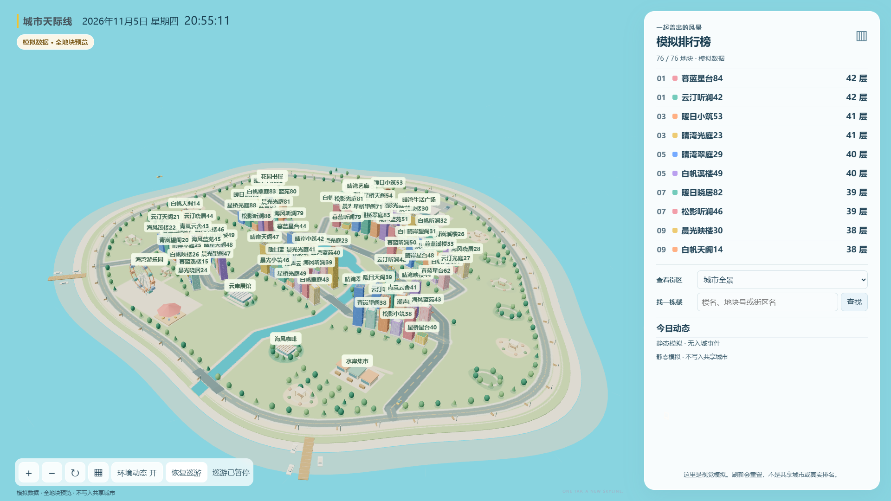

每天重置本页
成绩和作品只在当前页面内存中。刷新即重置；按设备时间换算北京时间，每天00:00重新初始化，后台页面恢复时补清。固定样例楼仍用于演示。
ONE FINGER. ONE TOWER. A CITY BUILT TOGETHER.
手机体验逐层换向的盖楼玩法；电脑探索明亮滨水城市。这里的成绩与楼房都是模拟体验，不会进入任何真实活动。

成绩和作品只在当前页面内存中。刷新即重置；按设备时间换算北京时间，每天00:00重新初始化，后台页面恢复时补清。固定样例楼仍用于演示。
大屏只有虚构样例与浏览交互，没有真实玩家或管理操作，无需口令。完整版本的管理功能应由服务端认证保护。
这个静态试玩不联机、不共享榜单，也不接收照片。多人同步、照片保存与真实城市需要完整 Docker 部署。
可提供部署服务与活动前使用准备支持，具体范围和安排欢迎留言沟通。
咨询部署服务 ↗反馈与使用指南 ↗